| GRADE | NAME | NOTES | NOTES TRANSPOSED IN C |
| I | JAZZ MINOR | 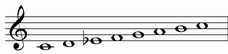 | |
| II | DORIAN b9 | 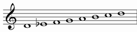 | 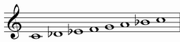 |
| III | LYDIAN AUGMENTED | 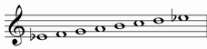 | 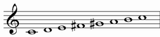 |
| IV | LYDIAN DOMINANT | 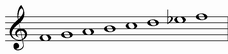 | 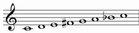 |
| V | MIXOLYDIAN b6 | 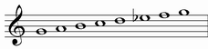 | 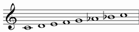 |
| VI | SEMILOCRIAN | 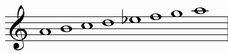 | |
| VII | SUPERLOCRIAN | 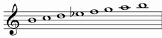 |
Classical Melodic Minor scale has two forms: ascending and descending:
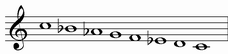
the descending form correspond to the natural minor scale.
In modern music, however, even the ascending form can be used to descend.
JAZZ MINOR |
Alternative names: Melodic Minor Ascending, Minor Major, Modern Minor, Ionian flat 3, Dorian maj7, Ipoionian, Dorian major 7
It starts from the first grade of melodic minor scale
The name Minor Major is because this mode starts like a minor mode an ends like a major one.
| NATURAL MINOR | C | D | Eb | F | G | Ab | Bb | C | |||||
| HARMONIC MINOR | C | D | Eb | F | G | Ab | B | C | |||||
| MELODIC MINOR | C | D | Eb | F | G | A | B | C |
Structure: 2122221
| chords over first notes: | ||
| Triad: | Seventh chord: | Complete chord: |
| minor | minor with major seventh | |
|
|
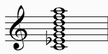 |
Chord simbols: Cm, Cm(maj7), Cm6, Cm^, Cm9(maj7), Cm^9, Cm6/9
DORIAN b9 |
Alternative names: Dorian flat 9, Phrygian sharp 6, Javanese
It starts from the second grade of melodic minor scale
Structure: 1222212
| chords over first notes: | ||
| Triad: | Seventh chord: | Complete chord: |
| minor | minor seventh | |
|
 |
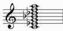 |
Chord simbols: Cm, Cm7, Cm7(b9), Cm11(b9), Cm13(b9)
Enharmonic chord simbols: Csus(b9)
LYDIAN AUGMENTED |
Alternative names: Lydian sharp 5
It starts from the third grade of melodic minor scale
Structure: 2222121
| chords over first notes: | ||
| Triad: | Seventh chord: | Complete chord: |
| augmented | major seventh with augmented fifth | |
 |
 |
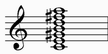 |
Chord simbols: C+, C+(maj7), C^+, C9+(maj7), C^(#5), Cmaj7(#5), C^(#5 #11)
LYDIAN DOMINANT |
Alternative names: Overtone, Lydian flat 7, Mixolydian sharp 11, Mixolydian #4
It starts from the fourth grade of melodic minor scale
Structure: 2221212
| chords over first notes: | ||
| Triad: | Seventh chord: | Complete chord: |
| major | dominant | |
 |
 |
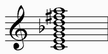 |
Chord simbols: C, C7, C9, C7(#11), C9(#11), C13(#11)
Enharmonic chord simbols: C7(b5)
MIXOLYDIAN b13 |
Alternative names: Mixolydian flat 6, Hindu, Aeolian sharp 3, Aeolian Dominant, Hindustan
It starts from the fifth grade of melodic minor scale
Structure: 2212122
As we can see from the structure, this is a palindromic mode
| chords over first notes: | ||
| Triad: | Seventh chord: | Complete chord: |
| major | dominant | |
|
|
 |
Chord simbols: C, C7, C9, C7(b13), C9(b13), Csus, C7sus, C9sus
Enharmonic chord simbols: C7(#5)
SEMILOCRIAN |
Alternative names: Locrian natural 2, Half Diminished, Aeolian flat 5, Locrian #2
It starts from the sixth grade of melodic minor scale
Structure: 2121222
| chords over first notes: | ||
| Triad: | Seventh chord: | Complete chord: |
| diminished | half diminished | |
 |
 |
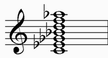 |
Chord simbols: Cm7(b5), CØ, Cm9(b5), CØ9
SUPERLOCRIAN |
Alternative names: Altered, Ravel, Diminished Whole-tone, Locrian flat 4
It starts from the seventh grade of melodic minor scale
The name Diminished Whole-tone is because this mode starts like a diminished mode an ends like a whole-tone one.
Structure: 1212222
| chords over first notes: | |
| Triad: | Seventh chord: |
| diminished | half diminished |
|
|
Enharmonic interpretation:
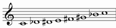
| chords over first notes: | ||
| Triad: | Seventh chord: | Complete chord: |
| augmented | dominant with augmented fifth | |
|
 |
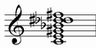 |
Enharmonic chord simbols: C7alt, C7(b5), C7(#5), C+7, C7(b5 b9), C7(#5 #9), C7(b9 #9 #11 b13), ecc.